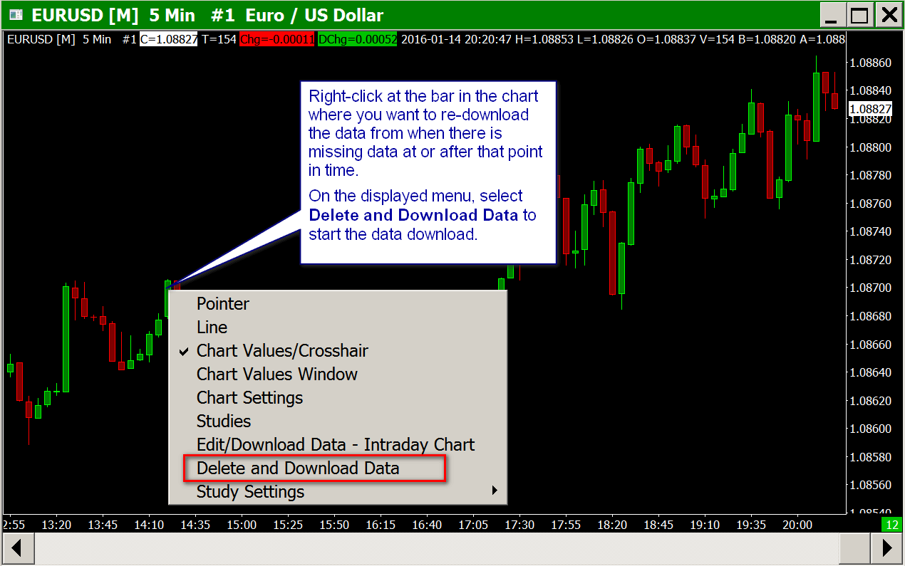

Historical Intraday Data (Missing Data / Download Errors / Viewing More Data)
- Missing or Incomplete Intraday Chart Data
- Error when Downloading Historical Intraday Data from the Sierra Chart Historical Data Server
- Downloading/Viewing More Historical Intraday Data
- Canceling Intraday Data Downloads
Missing or Incomplete Intraday Chart Data
7.1 - Retrying Downloading of Intraday Data
Sierra Chart will always download and permanently store historical Intraday chart data for a symbol when you are connected to the data feed and an Intraday chart for the symbol is open or the symbol is listed in the Global Settings >> Intraday File Update List.
If the Data or Trading service Sierra Chart is connected to does not provide streaming real-time or delayed data, then Intraday charts will not automatically be kept up-to-date. You will need to select File >> Disconnect and File >> Connect to Data Feed to cause a historical data download for the Intraday charts so they will be up-to-date.
In the case of when using SC Data-All Services, the historical Intraday charts will be periodically updated without reconnecting to the data feed if they are not receiving streaming data updates.
When Sierra Chart is connected to the data feed or you open an Intraday chart for a symbol that was not previously opened while connected to the data feed, the data that is missing from the data file for the symbol and is also available on the data server will definitely be downloaded by Sierra Chart.
The amount of Historical Intraday Data that you will receive from the Data or Trading service server depends upon the service you are using and how many days Sierra Chart is set to download. Select Global Settings >> Data/Trade Service Settings on the menu. Set the Maximum Historical Intraday Days to Download >> Non-Tick Data / 1-Tick Data settings to the number of days of Intraday data you require be downloaded.
If the server does not have all the Intraday data for a symbol from the last time in the chart to the present, the Maximum Historical Intraday Days to Download is not high enough, or the server has less than the maximum number of days you have specified to download, then there will be data missing from the chart.
In the case of the Sierra Chart Historical Intraday Data services which is used by many of the supported Data and Trading services we support, a problem connecting to this server or a problem downloading data, will also cause missing data.
Note: The data server may be providing the all the data. However, the missing data issue may be caused by the data being filtered out from the chart for other reasons which are explained in the other sections below.
Retrying the Download When There is Data in the Chart
If there are bars in the chart, even a few, then to re-download Intraday data for the symbol of the chart, follow these instructions:
{kind=link}
- Important: To make sure that the historical Intraday data request is routed to the proper source, it is necessary that the Symbol Settings are up-to-date by following the instructions to Update the Symbol Settings. This only needs to be done one time. Although if you have not done this step in a while and there is missing Intraday data, you should do it again now.
- Make certain Sierra Chart is connected to the data feed by selecting File >> Connect to Data Feed on the menu. If Sierra Chart was not connected, then the data from the last bar in the chart to the present time will be downloaded after you connect. Depending upon the particular Data or Trading service being used, if Sierra Chart cannot connect to the data feed, then historical Intraday data may not be able to be downloaded. To determine if Sierra Chart is connected to the data feed, refer to File >> Connect to Data Feed.
- Select Global Settings >> Data/Trade Service Settings on the menu. Make sure the Maximum Historical Intraday Days to Download >> Non-Tick Data / 1 Tick Data settings are set to what you require. 186 is recommended. If you want to get data further back in time than you already have in the chart data file, then you may need to increase this setting, assuming the server has the data. Press OK.
- Make sure your computer's Date and Time are set accurately. For complete details, refer to Date and Time Issues. This step only needs to be done once.
- Go to your chart and use your Pointer to point to where you want to begin the historical Intraday data download at. This should be right before the missing or incomplete Intraday data.
Right-click your Pointer and select Delete and Download Data on the Chart Shortcut Menu. This will delete and re-download from the position you pointed to, all the way to the end of the data file. You will see Downloading Historical Data displayed on the chart window. Refer to the image to the right.
If the Intraday chart is missing data at the end of the chart, then just point to a bar near the end of the chart, right-click your pointer and select Delete and Download Data on the chart shortcut menu. - Deleting All Data: To delete all the data in the chart data file and download all available data from the server, then select Edit >> Delete All Data And Download on the menu. You will want to perform this procedure if you did not get any historical when you initially opened the chart, or in the case to get data going further back than you already have. This is also the simplest method just to re-download all of the data.
When the chart has one of the Chart >> Chart Settings >> Symbol >> Continuous Contract options selected, then you will receive a prompt asking if you want to delete and re-download data for the current symbol of the chart or for all of the symbols loaded into the chart.
In this case it is recommended to press No to delete data for all of the current and expired symbols loaded in the chart to make sure all of the missing data is downloaded. - When the historical Intraday data download is complete, you will see the following message displayed on the chart.

- If instead you see the following Download Failed message, then refer to the Error when Downloading Historical Intraday Data from the Sierra Chart Historical Data Server section on this page. Also refer to that section if the download takes a long time with no data being downloaded in the chart.
- For instructions to edit an Intraday data file, refer to the Intraday Data Editor documentation page.
{kind=link}
Missing Volume Profile Data on a Trade DOM
In the case of a Trade DOM window that has a Volume by Price study, then this data is built from Intraday chart data. If the Volume Profile looks incomplete which would indicate there is missing Intraday chart data, then what you need to do is go to a standard Intraday chart and follow the procedure above to re-download the Intraday data to fill in any missing Intraday data.
After this procedure is completed, then go back to the Trade DOM and select Chart >> Reload and Recalculate. If this command is not available, then update to the latest version.
Deleting and Downloading Intraday Data for All Charts
It is supported to perform a Delete and Download of Intraday data from a specific Date-Time for all open charts in the Chartbook, in a single operation. Follow these steps:
- Select Global Settings >> Customize Chart Shortcut Menu.
- Make sure the Delete & Download Data - All Charts menu command is listed in the Selected Menu Items list.
- Press OK.
- Follow through the Retrying the Download When There is Data in the Chart instructions on this page. At the step where you normally will select the Delete and Download Data menu command, instead select Delete & Download Data - All Charts on the menu.
Retrying the Download When There is No Data in the Chart
- If there is no data in the chart, then this could be either because the chart data file for the symbol contains no data or the Session Times in Chart >> Chart Settings >> Session Times are filtering out the data.
- Important: To make sure that the historical Intraday data request is routed to the proper source, it is necessary that the Symbol Settings are up-to-date by following the instructions to Update the Symbol Settings. This only needs to be done one time. Although if you have not done this step in a while and there is missing Intraday data, you should do it again now.
- Select Edit >> Edit/Download Data - Intraday Chart on the menu. The editor will not display any data if the data file is empty.
- If the data file is empty, all you need to do to retry downloading the data is to go to the chart and select Edit >> Delete All Data and Download.
- Otherwise, if there is data displayed in the Intraday Data Editor, scroll to the position to where you want to start the data re-download from and press the Delete and Download Data from Current Position to End button.
- After the historical data download is complete, if there still is no data, then the symbol may not be correct. Refer to Symbols. Or there is no historical Intraday data available for the symbol.
Mismatch Between Bar Close and Price Box on Right Side Scale of Chart
If data from the last time in the chart to the present price is missing from the chart, then the close mark on the last bar in the chart will not match the current price box that is displayed on the right of the chart window.
When the markets are open and there is active trading for the symbol, then the last bar and the price box on the right should definitely match. If they do not, then the problem would be explained in one of the subsections of help topic number 3.
Another reason the close mark on the last bar in the chart will not match the current price box is because the Start Time and End Time in the Chart >> Chart Settings window are not set to cover the full 24-hour period. In this case, the data that is in the chart data file is not loaded into the chart.
The box on the right will always show the current price for the symbol.
Incorrect Chart and Session Times Settings
Data will also appear to be missing from an Intraday chart if some Chart >> Chart Settings are incorrect.
Select Chart >> Chart Settings on the menu to open the Chart Settings window.
Select the Data Limiting tab.
If the Load Data Limiting Method: Days to Load >> Days to Load for Intraday Chart Data Type setting is not set to load all of the data you want to see in the chart, data will seem to be missing. The Days to Load for Intraday Chart Data Type setting must include weekends as the setting is based upon calendar days.
Normally the Load Data Limiting Method: Date Range >> Date Range >> To/From settings should be blank. However, if you are using those settings make sure they are set to the date range that you want to see. Normally these settings should not be used. If you are using a From date, it is recommended that the To date is kept blank.
If the Session Times >> Intraday Chart Session Times >> Session Start Time and Session Times >> Intraday Chart Session Times >> Session End Time settings do not cover the time period you want to see, data will be missing from the chart.
To cover the full 24 hours use 00:00:00 for the Session Start Time and 23:59:59 for the Session End Time. Try setting these Session Times to cover the full 24 hours to see what data is available.
The global Time Zone setting or the chart specific Time Zone setting controls the time zone that times are displayed in. The Session Start Time and Session End Time Session Times settings for the chart correspond to that Time Zone setting and need to be set appropriately.
For complete documentation to control the time zone either globally or for an individual chart, refer to the Time Zone page.
If the Session Times >> Weekend Data setting is not set to load weekend data, then you will not see the corresponding weekend data in the chart. A weekend is considered Saturday and Sunday. For additional details, refer to the Weekend Data setting.
Dates to Exclude
It is possible through the Chart >> Chart Settings >> Chart Data >> Set Dates To Exclude setting to specify one or more calendar dates to exclude from a chart.
If you see data for a particular Date missing from an Intraday chart, then check the Dates to Exclude setting to be sure that particular date is not listed. If it is, then remove it.
Symbol Not Trading for a Particular Period of Time
One reason for missing data in an Intraday chart for a particular period of time, is that trading did not occur during that period of time. This is something to be aware of. Check with the contract specifications on the exchange website to find out what times a symbol trades during.
Obviously if the market is open and there is not trading for a very active symbol for a period of an hour, then almost certainly the data is actually missing.
However, if there is data missing from 1 to 5 seconds for an active symbol, this is not unusual. The market may not have traded during that short period of time. Data feeds do not transmit data every second when there is not trading occurring for a symbol.
In the case of the Chicago Mercantile Exchange which includes the CME, COMEX, CBOT, NYMEX, there is no trading from 17:00:00 to 17:59:59.999 US Eastern time for all symbols. And there is no trading on Saturday or on Sunday until 18:00:00 US Eastern time.
If you want to have bars in the chart for periods of time where there is no trading, then enable the Include Columns with No Data option in the Chart >>Chart Settings.
Invalid Symbol / Symbol Not Supported by Data/Trading Service
Symbols are specific to the Data or Trading service being used. One reason for no data in an Intraday chart or the chart no longer updating is that the symbol of the chart is not correct.
In this case, refer to the Symbols section for complete information and instructions on what to do in this case.
Error when Downloading Historical Intraday Data from the Sierra Chart Historical Data Server
Overview and Solutions
When you are using a Data or Trading service which uses the Sierra Chart Historical Data servers, then in these cases all historical Intraday data and in some cases historical Daily data is downloaded from the Sierra Chart Historical Data servers.
The Sierra Chart Historical Data servers are used by many of the supported Data and Trading services. If you do not get any historical Intraday or Daily data or you have missing historical Intraday or Daily data, and you receive an error displayed in the Message Log that says one of the following:
- Error downloading historical Intraday data for [symbol]. The download timed out
- Lost the connection to the Sierra Chart Historical Data server
- Windows error code 10061: No connection could be made because the target machine actively refused it.
- Socket (#) | Closed. Windows error code 10053: An established connection was aborted by the software in your host machine.
- Windows error code 10013: An attempt was made to access a socket in a way forbidden by its access permissions.
- HD Request # - Error downloading historical Intraday data for [symbol]. The network socket has been closed. Retrying download.
- Socket (#) | Error on address resolution. Windows error code 11002: This is usually a temporary error during hostname resolution and means that the local server did not receive a response from an authoritative server.
- HD Request # | Error downloading historical Intraday data for [symbol]. Timeout error connecting to server.
- HD Request # | Error downloading historical Daily data for [symbol]. The network socket has been closed. Retrying download.
Then these would be due to a firewall blocking the connection to the server, or a network communication problem to the server or a DNS name resolution problem.
If it is a firewall issue, it could be a software firewall on your computer, a firewall with your router or your ISP (Internet service provider). Most likely, it is a software firewall on your computer. The built-in Windows firewall will not be a problem. If you are using a firewall other than the Windows firewall, then disable it to see if it solves the problem.
After disabling firewall software, restart Sierra Chart and try again by opening the chart and connecting to the data feed (File >> Connect to Data Feed). Firewalls can be very troublesome and disabling them sometimes may not resolve the problem. Only uninstalling them completely from your system might resolve the issue (however not necessarily).
You may also want to try restarting your computer to see if that resolves the problem if you continue to have a problem.
Sierra Chart needs to be provided access to ports 10149, 10150 to connect to the historical data server. If you are using a router, make sure it allows access to ports 10149, 10150. Contact your ISP (Internet Service Provider) and make certain they are not blocking ports 10149, 10150. They could be blocking this port or degrading communication over this port. If they are blocking this port, you can use port 80 as explained below.
Once the problem is solved and you are able to connect to the Sierra Chart historical data server, then you will need to re-download the data in your charts to fill in the missing data. For instructions to do this, refer to Retrying Downloading of Intraday Data.
Using Port 80
Some ISPs will block or restrict data on nonstandard Internet ports. In this case you will need to use the standard Internet port 80 for downloading historical Intraday data from the Sierra Chart historical data server. To do this, follow the steps here:
- Select Global Settings >> Sierra Chart Server Settings.
- Set the option Use Port 80 for Historical Data to Yes.
- Press OK.
- If you previously were having a problem getting a successful connection to the Sierra Chart historical data server or maintaining that connection during the historical data download, using port 80 should resolve the problem. The next step is to re-download the data in the charts to fill in the missing data.
For instructions to do this, refer to Retrying the Download When There is Data in the Chart.
Note: It is not normally recommended to use port 80 because some ISPs will block data over port 80 if the data is not true HTTP data and this will cause problems when downloading historical Intraday data. However, if you need to use port 80 because your ISP is blocking other ports, then you will need to use this port.
Improving Historical Intraday Data Downloading Performance
Follow the below steps to improve the performance (reducing time) when downloading historical Intraday data. There normally is not a problem with the performance of downloading historical Daily data because the amount of data transferred with Daily data is extremely small in comparison.
When you start using new symbols in Sierra Chart that have not been previously used or there is no historical data already downloaded for them, then it will take time for the initial historical data to download for those symbols. This can be the case when you switch to a different Data or Trading service in Sierra Chart since the symbols are different between services. So historical data needs to be downloaded for the symbols for the service you have changed to.
We have had numerous reports, that when using Sierra Chart on WINE and Linux, that network I/O performance, in particular with receiving data is very slow/poor and receiving historical data when using WINE, in particular tick by tick data, is very very slow. We do not know why this is the case. Perhaps it has something to do with the large receive buffer sizes that Sierra Chart uses. However, WINE should not have this issue. Part of the problem you may be having may be related to WINE.
- Once a historical Intraday data has completed, you can see how long it took from a Window >> Message Log line like this:
HD Request # 24 | Intraday download COMPLETE for XAUUSD. Completion time: 7s. Unique request ID: 23In this particular case it took 7 seconds. This step is just provided for information.
- If historical Intraday data downloads are still in progress, then select Edit >> Cancel Intraday Data Downloads to cancel the downloads.
- Select File >> Disconnect.
- Select Global Settings >> Data/Trade Service Settings.
- Increase the Intraday Data Storage Time Unit setting. For the best performance use 1 Minute. However, this setting may not be acceptable depending upon the type of chart bars you are using.
For example, with Number of Trades, Volume, Range, Reversal, Renko, Delta Volume, Price Change, Point and Figure Bars, a setting of 1 Second or 1 Tick is necessary for accuracy.
However, to improve performance you really need to increase this to 5 Seconds or higher. The larger the time unit, the better the performance. - Press OK.
- It will also help to reduce the days to load in charts which are loading a lot of days of data. This is controlled through the Days to Load Chart Setting for the chart.
- Select File >> Connect to Data Feed.
- If there is still a problem with slow historical data downloads, then follow the instructions in the Using Port 80 section if your ISP throttles data on the default ports of 10149, 10150. Generally this is most unlikely and is not going to help and can create a problem instead of solving it.
- If there is missing historical Intraday data in your charts due to previous timeout or other errors when downloading data, then follow the Retrying the Download When There is Data in the Chart instructions.
- If there is a temporary problem with your Internet connection, with your Internet service provider or somewhere else on the Internet causing slow downloading of historical Intraday data, you will just have to wait for that condition to clear.
Downloading/Viewing More Historical Intraday Data
- Instructions to Download/View More Historical Intraday Data
- Using Date Range in File >> From to Download More Historical Data
- Using Expired Futures Contracts
Instructions to Download/View More Historical Intraday Data
It is possible to download and/or view more historical Intraday data than you are currently able to see. To download and/or view more data, follow the steps below.
Keep in mind that the amount of historical data available depends upon the Data or Trading service you are using and the symbol. This help topic subsection applies to Intraday data only.
For help with Historical (Daily, Weekly, Monthly, Quarterly, Yearly) charts, refer to No Historical Chart or Blank Chart | Historical Chart Not Updating | Missing Historical Chart Data instead.
In the case of a futures contract chart for a specific contract month (Example: H22 March 2022), it has a limited life. Therefore, it will only go back so far in time. Also, depending upon the Data or Trading service you are using, it may not go back to the time that trading began in the particular contract. To get data further back in time you will need to enable the Continuous Futures Contract option for the chart. This will load in multiple futures contracts in the chart.
For instructions to do this, refer to the Continuous Futures Contract Charts page.
The time period of data displayed in the current view in the chart depends upon the scroll position of the scroll bar at the bottom of the chart and the chart bar spacing. Make sure the scrollbar is enabled and visible through Chart >> Scrollbar. Use the scrollbar at the bottom of the chart scroll back in time to see more data.
For more information and instructions, refer to Scrolling The Chart and Right Side Fill Space.
To load more data in the chart continue to follow the instructions below.
- Select Chart >> Chart Settings >> Data Limiting on the menu. .
- Set the Load Data Limiting Method setting to Number of Days to Load.
- Set the Days to Load for Intraday Chart Data Type setting to the number of days you want to load and view in the chart. Press OK.
If that does not load all the data you need to view, then go on to the next step. To see all of the data loaded in the chart you will need to scroll back the chart. If you do see the data in the chart that you require, then stop here. - Make sure you are using the correct Symbol in the chart based upon the Current Selected Service. Refer to Symbols.
In the case of futures contract symbols, you can translate these to the correct symbol based upon the Current Selected Service, by using the Edit >> Translate Symbols to Current Service command. - Select Global Settings >> Data/Trade Service Settings >> Common Settings on the menu. Set the Max (Maximum) Historical Intraday Days to Download Non-Tick Data / 1-Tick Data settings to the number of days of Intraday data you want to have downloaded from the server. The easiest thing to do is set both of these settings to 186 and go on to the next step, assuming you do not require more than 6 months of historical data for a non-futures symbol.
In the case of a futures contract symbol, the number of days to download is relative to the last day of the month in the contract month of the symbol, and not to the current date.
There is a separate setting for 1 Tick Data and Non-Tick Data. To make sure you get a reasonable amount of data, it is recommended to set both of these to 186. You will need to set these settings to a higher value to download more historical Intraday data. The 1 Tick Data setting applies when the Intraday Data Storage Time Unit is set to 1 Tick, or historical Tick data is downloaded from the Data/Trading service.
There may be a limit to the maximum number of historical Intraday days of data available from the Data or Trading service you are using. If you use a setting that is over the limit, only the maximum number of historical Intraday days of data supported by the server will be downloaded. - If you have increased the Maximum Historical Intraday Days To Download setting, it will take longer to download the initial historical Intraday data for a chart especially if the data is Tick by Tick data.
If you do not use a timeframe per bar in your charts of less than 1 Minute and you are not using Number of Trades, Volume, Range, Reversal, Renko, Delta Volume, Price Change, Point and Figure Bars, then set the Intraday Data Storage Time Unit to 4 seconds or higher to increase download speed. - Press OK.
- You should make sure the Symbol Settings are up-to-date before re-downloading the data in the next step. This ensures the historical data request is routed to the correct source. Follow the instructions to Update the Symbol Settings. This step only needs to be performed once. If you are not sure whether you should perform this step, then perform this step.
- Necessary Step: Go to the chart. Select Edit >> Delete All Data And Download on the menu. Press Yes to confirm. Sierra Chart will request historical Intraday data up to the number of days specified with the Maximum Historical Intraday Days to Download setting explained above.
If you are using the Continuous Futures Contract option in Chart >> Chart Settings, then select the particular contract months in the list you want to re-download data for in the chart.
Once the download is complete you should be all set.

- Finally, if you do not receive the data in the chart that you require, and you are using a sub instance started through File >> New Instance, then you need to go back to the main instance of Sierra Chart and perform the above steps for that instance.
And then return back to the sub instance chart and select Edit >> Delete All Data And Download. For additional information about this, refer to Historical Data and Missing Historical Data.
{kind=link}
{kind=link}
Using 'Date Range in File >> From' to Download More Historical Data
These instructions explain an alternative way to download more historical Intraday data in a chart when Chart >> Chart Settings >> Symbol >> Continuous Contract is set to None.
- Select Chart >> Chart Settings >> Data Limiting on the menu. Set the Date Range in File From date to the date that you want the data in the chart to start at. This needs to be set to an earlier date.
- Set the Days to Load for Intraday Chart Data Type to the number of days that you want to view in the chart.
- Press OK.
- You will then be prompted to download more historical Intraday data. Press Yes to confirm.
- After the historical data downloading is complete, if you notice any missing data in the chart, then you will need to follow the Instructions to Download/View More Historical Intraday Data instead.
After following those instructions, then re-download the data with Edit >> Delete All Data and Download from the main menu at the top. For additional information, refer to Retrying the Download When There is Data in the Chart.
Normally there should not be any missing data. Although one reason there could be incomplete data, which will not be resolved by re-downloading the data is that the chart is not set to a Continuous Futures Contract chart in the case of a futures symbol. You will need to do that. Refer to Continuous Futures Contract Charts.
Using Expired Futures Contracts
With all of the supported Data and Trading services, it is possible to use an expired futures contract symbol. By using an expired symbol you can get data further back in time for a particular futures market.
However, there is a better method to access data further back in time for a particular futures market instead of opening an expired futures contracts symbol. This method is to use the Continuous Futures Contract Chart feature. This is the recommended method.
To open a Historical or an Intraday chart for an expired futures contract symbol, select File >> Find Symbol on the menu. Select an expired symbol from the list or manually type one into the Selected Symbol box.
The symbol does not need to actually be listed to open a chart for it. If it is not listed, you will need to manually type the symbol into the Selected Symbol box.
In the case of a futures contract, to specify an expired contract symbol, you simply need to modify the month and year portion of the symbols that you see listed. For example, in the case of COMEX gold futures, if you see GCM20 listed, and you want to open a chart for the market going back 10 years, then you would manually type in the Selected Symbol box: GCM10.
Press the Open Intraday Chart or Open Historical Chart button to open an Intraday chart or Historical Daily or higher timeframe chart respectively.
If the chart that has been opened is not displaying the symbol you manually typed in or selected, then select Chart >> Chart Settings and uncheck Main Settings >> Automatically Rollover Futures Symbol (Refer to Automatically Rollover Futures Symbol). After this then type the correct symbol into the symbol box.
{kind=link}
Single Digit Year Limitation
For supported Trading services that use symbols that use single-digit years for futures contracts, it is not possible to open a chart for an expired futures contract for a year which is more than 5 to 8 years prior to the current year and get a reliable match of the intended year, since the single-digit years do not provide a definite identification of which decade the single digit year belongs to.
The way to work around this limitation is to install another copy of Sierra Chart on your system into a different folder and use the Sierra Chart Historical Data Service. For instructions, refer to Sierra Chart Historical Data Service Setup Instructions.
Canceling Intraday Data Downloads
To cancel the current and pending historical Intraday data downloads, select File >> Disconnect.
To resume the historical Intraday data downloads for open charts, select File >> Connect to Data Feed.
*Last modified Tuesday, 20th June, 2023.